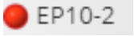
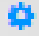

1. Production Monitoring¶
It is the analysis screen that provides detailed and vivid monitoring of the production made in your factory
- working status of your machines based on date or shift,
- total production quantities based on shift,operator and product,
- production order worked
- production performance evaluation,
- production performance evaluation,
- machine downtime reasons and durations,
- machine on / off movement
you can access it in the form of summary view or detail view.
{kind=link}
Image 1: Production Monitoring Screen Summary View
|
|
|
|
|
|
|
|
|
|
|
|
|
|
|
|
|
1.2. Location Tree¶
It shows the list of machines defined in your company and the factory layout plan.By selecting from the machine list, date belonging to a single machine,lines or all, you can reach and continue your transactions that way.
You can also see the working status of the machines live from the location tree. The information on how many machines are currently available in the section for that situation shown to the user. The icon next to the machine name () what situation that corresponds to the info icon () by clicking.
{kind=link}
{kind=link}
Lokasyon ağacında düzenleme yapmak için düzenle simgesine () tıklayarak Konfigürasyonlar / İş İstasyonları / Lokasyonlar menüsüne yönlendirileceksiniz. Düzenleme bilgileri için (Bölüm 8.1.3) Lokasyonlar bölümüne bakabilirsiniz.
{kind=link}
1.3. Detail View¶
Makine seçimine ve tarih kriterlerine göre ekranların detay sayfalarını görüntülemenizi sağlayacaktır.
Detay butonunu kullanarak, tarih aralığı seçerek, vardiya seçimi yaparak ya da lokasyon ağacından herhangi bir alanı seçerek detay ekranına ulaşabilirsiniz.
1.4. Filter¶
Günlük, haftalık ve aylık olacak şekilde zaman kısıtı vererek listeleme işlemini gerçekleştirebilirsiniz.
1.5. Date Area¶
Tarih aralığı girerek listeleme işleminize tarih kısıtı uygulayabilirsiniz.
1.6. Previous Day - Next Day¶
Butonlarını kullanarak kısa yoldan tarihler arasında geçiş yaparak listeleme işlemini gerçekleştirebilirsiniz.
1.7. Shifts¶
Tanımlamış olduğunuz vardiyaların arasından seçim yaparak listeleme işleminizi vardiya bazlı olacak şekilde gerçekleştirebilirsiniz.
1.8. Expand - Collapse¶
Butonunu kullanarak ana menüyü ve lokasyon ağacını ekrandan kaldırabilir, verilerinizi ve grafiklerinizi daha geniş olarak listeleyebilirsiniz. Ya da ana menüyü ve lokasyon ağacını ekrana dahil edebilirsiniz.
1.9. Notifications¶
Şekil 1
En son oluşan hatalı kaynaklar listelenmektedir. Hatanın oluşma sebebine dair kısa bir açıklama ve kaç gün önce meydana geldiğinin bilgileri bulunmaktadır (Şekil 1).
Tümünü Göster dediğinizde Alarmlar menüsüne yönlendirileceksiniz. Oluşan tüm alarm bilgileri için (Bölüm 5) Alarmlar bölümüne bakabilirsiniz.
Bildirimlerden birisinin üzerine tıkladığınızda ise Kaynak Operasyonları / Kaynak İzleme / Kaynak Detayı ekranı açılacaktır. O kaynağın detay bilgilerini görebilmeniz için (Bölüm 3.1.1) Kaynak Detayı bölümüne bakabilirsiniz.
1.10. Quick Support¶
Butonunu kullanarak sistemle ilgili herhangi bir probleminiz veya bir sorunuz olduğu takdirde
magnet@magmaweld.com adresine mail atabilir, MagNET destek ekibimizle iletişime
geçebilirsiniz.
1.11. Company Name - User Name¶
Sisteme giriş yapan kullanıcı bilgisi ve giriş yapılan firmanın bilgisi ana ekranda kullanıcıya gösterilmektedir.
1.12. Language Options¶
Butonuna tıkladığınızda programın desteklediği dillerin listesi açılacaktır. Programı kullanmak istediğiniz dili buradan belirleyebilirsiniz.
1.13. Change Password¶
Aşağı ok simgesine () basılarak açılan pencereden şifre değiştir seçilmelidir. Sisteme giriş
yapan kullanıcı, sisteme giriş yaparken kullandığı eski şifresini, oluşturmak istediği yeni şifreyi
ve doğrulamak için tekrardan belirlediği yeni şifreyi girip kaydet butonuna ()
tıkladığında; eski şifresi uyumluysa ve girdiği yeni şifreler uyuşuyorsa kullanıcının şifresi
başarılı bir şekilde değişmiş olacaktır. Kullanıcı eski şifresini yanlış girdiyse Girilen eksi şifre
hatalı! uyarısıyla, girdiği yeni şifreler uyuşmuyorsa Girilen yeni şifreler uyuşmadı! uyarısıyla
karşılaşacaktır.
{kind=link}
{kind=link}
1.14. Logout¶
Aşağı ok simgesine () basılarak açılan pencereden çıkış seçilmelidir. Böylece sistemden başarılı bir şekilde çıkış yapmış olursunuz
1.15. Help¶
Programın kullanım kılavuzuna buradan ulaşabilirsiniz.
1.16. Working Status¶
Şekil 2
Günlük olarak veya tarih aralığı girilerek belirtilen sürede, seçilen makinelerin;
- net çalışılan süre = net çalışılan süre / mevcut çalışma süresi,
- planlı duruş = planlı duruş / mevcut çalışma süresi,
- plansız duruş = (detaylı plansız duruş + operasyonel duruşlar) / mevcut çalışma süresi yüzdelik dilim grafiği şeklinde gösterimi ve,
- seçilen makinelere ait Üretim Planlama / Haftalık Çalışma Planı (Bölüm 2.3) menüsünden tanımlanmış olan toplam planlanan çalışma süresi,
- günün çalışma saati başlangıcından bu zamana kadar geçen süre olan mevcut çalışma süresi,
- Firma Bilgileri / Vardiyalar (Bölüm 9.1) menüsünden tanımlanan mola süresine denk gelen planlı duruş süresi,
- plansız şekilde oluşan fakat nedeni belirtilenlerin süresi ve
- neden girilmeyen tüm duruşların süresi dakika cinsinden kullanıcıya gösterilmektedir (Şekil 2).
Grafikte bulunmasını istemediğiniz değer varsa o parametrenin üzerine tıklamanız yeterlidir. Bu şekilde o parametre pasif hale gelecek ve yüzdelik dilim grafiği aktif parametrelere göre hesaplanacaktır.
1.17. Weekly Working Status¶
Şekil 3
Seçtiğiniz hafta boyunca seçilen makinelerin;
- net çalışma süresinin,
- planlı şekilde oluşan duruş süresinin ve
- plansız şekilde meydana gelen tüm duruşların süresinin grafiksel olarak detaylı gösterimi yer almaktadır (Şekil 3).
Grafikte, detaylı görmek istediğiniz alanı seçerseniz grafik o alana yoğunlaşacak ve o alandaki değerler kullanıcıya gösterilecektir. Grafiğin üzerinde bulunan tümünü göster butonuna () tıkladığınızda grafik ilk haline geri dönecektir. Grafikte bulunmasını istemediğiniz değer varsa o parametrenin üzerine tıklamanız yeterlidir. Bu şekilde o parametre pasif hale gelecek ve grafik aktif parametrelere göre hesaplanacaktır.
Resim 2: Üretim İzleme Ekranı Özet Görünüm
- OEE
- DownTime Times
1.18. OEE¶
Şekil 4
Günlük olarak veya tarih aralığı girilerek belirtilen sürede, seçilen makinelerine ait;
- kullanılabilirlik,
- performans ve
- kalite
değerleri kullanılarak üretim – performans değerlendirilmesi yapılmaktadır (Şekil 4). OEE, makinelerinizin ne kadar iyi ve etkin kullanıldığını gösteren bir performans göstergesidir ve makine kapasitelerinizin, gerçekte ne kadarını kullandığınızı göstermektedir. Kullanılabilirlik, planlanan sürenin yüzde kaçına uyulduğunu gösteren değerdir. (Bölüm 1.16) Çalışma Durumu alanında hesaplanan net çalışılan süre ve Üretim Planlama / Haftalık Çalışma Planı (Bölüm 2.3) menüsünden belirlenen planlanan çalışma süresi değerleri kullanılarak hesaplanmıştır.
Kullanılabilirlik = Toplam Çalışılan Süre / Planlanan Çalışma Süresi
Performans, üretim hızlarına uygunluğunu gösteren değerdir.
Bölüm (8.1.1) Konfigürasyonlar / İş İstasyonları / Düzenle menüsünden makineye tanımlanan ürünlere ait belirlenen üretim hızı değerleri kullanılarak hesaplanmıştır.
NOT : Eğer ki üretim hızları alanından herhangi bir ürün seçilmediyse veya ürüne göre bir hız girilmediyse makineye ait teorik çalışma hızı baz alınarak OEE hesaplamaları yapılmaktadır.
Performans = Toplam Üretim Miktarı / (Maksimum Üretim Hızı * Çalışılan Net Süre)
Kalite, ürünün oransal olarak ne kadarının sağlam olduğunu gösteren değerdir.
Kalite = Firesiz Ürün Miktarı / Toplam Üretim Miktarı.
OEE = Kullanılabilirlik * Performans * Kalite